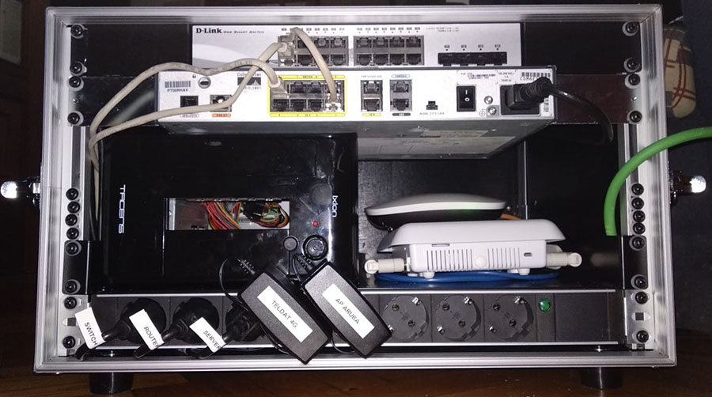

Proyecto
AF7 Tic Box
Este proyecto lo realicé para la asociación Arousa Fútbol 7 de la cual yo soy miembro, de hecho os hablo más en detalle en el proyecto que tengo dedicado a este evento. Debido a que las necesidades tecnológicas que el evento nos requería dependian de las instalaciones de las que disponíamos y que únicamente se utilizaban unas 3 semanas al año pensé en realizar un equipo que, además de ser transportable fácilmente, no nos diera muchos quebraderos de cabeza para su montaje y puesta en marcha. Así nació la AF7 Tic Box.
La AF7 Tic Box es una caja formato FlightCase de un tamaño de 5Us, en la que tenemos toda nuestra infraestructura hardware y software para poner en funcionamiento la parte tecnológica del torneo.

Primera versión de la AF7 Tic Box
La caja contiene los siguiente elementos:
- Switch DLink DGS-1210 de 16 puertos Ethernet + 4 puertos SFP
- SFP Cisco fibra multimodo
- SFP Dlink ethernet GETH
- Router Cisco 1801-M
- Antena LTE Teldat 4Ge
- 2 puntos de acceso Aruba AP-207
- Ordenador Gigabyte BRIX GB-BSI3H-6100
- Regleta de alimentación de 8 Schukos
- Dos inyectores POE TP-Link TL-POE150S
Con esta infrestructura hardware, más todo el software instalado, lo único que necesitamos es llevar la caja, darle alimentación eléctrica y ya tenemos todos los servicios en funcionamiento.
Continuando con el apartado hardware vamos a destacar las funcionalidades de cada equipo:
El router Cisco 1801-M es un router avanzado en el cual tenemos configurados varios aspectos. El primero es una vlan que conecta con la antena 4G y le envia los parámetros AT para realizar la conexión LTE (4G), una vez realizada la conexión se crea un interfaz virtual en modo acceso el cual recibe la IP pública enviada por el proveedor de servicios (destacar que los equipos no son de ningun operador por lo que funcionan con cualquier tarjeta SIM). En el momento que el interfaz virtual levanta IP un servicio RIP comprueba si hay conectividad hacia una ip (8.8.8.8) y reliza un ruteo hacia los puertos LAN que se encuentran en otra vlan. Así mismo el router dispone de un puerto WAN al que se puede conectar una conexión por cable existente en donde se haya instalado la caja, si este puesto está levantado el router dispone de otro servicio wan failover que analiza que conexión de las dos es más estable y balancea la carga principal de la LAN hacia el mejor acceso.
El switch D-Link DGS-1210 es un switch gestionable en el que hemos creado 4 vlanes física que se encuentran diferenciadas en los puertos. La primera Vlan es la que da acceso a la red local donde se encuentran todos los equipos de trabajo, servidores y clientes. La segunda Vlan es para la gestión del ancho de banda de la Wifi de invitados. La tercera gestiona también el ancho de banda de la Wifi para el personal de prensa. Y la cuarta vlan es un puente entre los dos SFP para que, en caso de que dispongamos de una acceso de fibra en el lugar, el switch funcione a mode conversor de medios y convierta el acceso de fibra a una conexion ethernet.
Los puntos de acceso Aruba Ap-207 son los que nos sirven para dar conectividad inalámbrica. Se ha creado un Aruba Contoller para gestionar la configuración de ambos aps. En el controlador tenemos configuradas tres ssid distintas, la WiFi interna, la WiFi de invitados o público y la WiFi de prensa. Cada red tiene su direccionamiento distinto para evitar posibles ataques internos. Uno de los aps tiene que ir conectado al switch pero el segundo ap tiene configurado en el controlador el modo IAP Mesh por lo que simplemente alimentandolo recibirá la misma configuración del controlador a través del primer ap y aumentará la cobertura de la señal inalámbrica desde donde se haya colocado.
El ordenador Gigabyte Brix tiene instaldo un sistema VMWare vSphere con ESXi 6.7. El equipo tiene instalada una segunda tarjeta de red y mediante NSX se ha generado una red virtual que solo le da acceso a la red de esa tarjeta a una de las maquinas virtuales. Dentro de este hypervisor tenemos varias maquinas con distintas funcionalidades.
La primera y más importante es una máquina con un sistema Sophos XG Firewall, esta maquina es la que hace uso de las dos tarjetas de red, la primera está conectada al switch Dlink de forma habitual. Tiene creada dos interfaces virtuales, la primera para hacer de acceso WAN del router CISCO, y la segunda para proveer de acceso a la LAN. La otra tarjeta de red esta conectada al SFP del switch y funciona como segundo acceso WAN. En cuanto a las funciones de este firewall tenemos, load balancer y failover entre la conexión facilitada por el router Cisco y el acceso de fibra, portal cautivo para las conexiones WiFi, bloqueo de contenido inapropiado (spam, pornografía, sitios de venta, casas de apuestas...), limitación de ancho de banda para vlanes WiFi, monitorización de uso de la red por equipos, usuarios o protocolo, limitación de uso de sitios web de streaming, etc.
La segunda máquina es un Windows Server que su función principal es la de ejercer de controlador de dominio. En esta máquina se crean los usuarios del active directory, gestiona perfiles móviles para clientes Windows (así al iniciar sesión desde un pc Windows dispondremos de las herramientas y accesos directos a estas sin necesidad de instalar ningun software), gestiona también un almacenamiento NAS con permisos NTFS; y también hace las funciones de servidor DHCP y servidor DNS de todos los servicios que se encuentran en la LAN.
La tercera es el servidor principal, una máquina con Debian que dispone de todos los servicios y herramientas principales. El primero es un entorno Dockers con un cluster de un solo nodo, pensado esto para poder ampliar con otra máquina en caso de que el rendimiento bajara. El segundo servicio es un servidor Apache2 que aloja la web de la intranet a partir de la cual se accede a todas las herramientas. El tercer servicio es un servidor de aplicaciones TomCat necesario para algunas herramientas. El cuarto servicio es un gestor de backups con Bacula que puede realizar copia de seguridad de todas las configuraciones, perfiles moviles, bases de datos y directorios indicados en la nube. A mayores este servidor dispone de las siguientes herramientas:
- OTRS como herramienta de ticketing para tener un registro de incidencias o mejoras a realizar.
- GLPI como herramienta ITSM con todo el inventariado hardware y software, así como con las configuraciones de todos los servicios.
- Redmine como herramienta de gestión de proyectos para mantener toda la documentación de uso de las herramientas y gestión de los entornos de desarollo propios.
- Zabbix como herramienta de monitorización de los servidores.
- Odoo como herramienta ERP y CRM para la venta de merchandasing y entradas, tesorería, gestión de personal...
- AF7Signage como herramienta de paneles informativos. Esta es una aplicación de creación propia programada en Python que muestra los resultados de los partidos y las clasificaciones en tiempo real. Se conecta al webservice de nuestra página web y recoge toda la información para mostrarla en una página web que es visualida en dos televisores dispuestos en localizaciones distintas del lugar.
- MPLedManager como herramienta de marcadores. Esta es una apliación de creación propia programada en Ruby que se encarga de enviar mediante puerto serie la información necesaria a los dos marcadores led, se ejecuta cada vez que hay una modificacion en el webservice de nuestra página web y genera efectos como iconos de un balón cuando hay un gol, parpadeo del digito que indica los goles durante los 30 segundos siguientes a haberse marcado, etc.
La cuarta máquina instalada es un Debian que funciona como servidor de bases de datos que dispone de tres motores distintos; MariaDB y PostgreSQL como bases de datos relacionales y MongoDB como base de datos no relacional.
La quinta máquina instalada es un Centos que tiene instalado el servidor de FreePBX como herramienta VoIP que utilizamos con unos terminales Yealink y aplicaciones SIP Phone en los teléfonos moviles para poder realizar comunicaciones internas entre el personal. Este Asterisk hace un SIP Trunk a traves de internet contra un ATA que tenemos en la oficina de la asociación por lo que también podemos hacer llamadas externas a través del teléfono fijo.
A mayores de esto disponemos de una Web App para que el personal que visialuza los partidos pueda registrar todos los eventos que se producen, esta app se conecta al webservice de la web y provoca que, por ejemplo, cuando un equipo meta un gol, todo lo que depende de ahí se actualiza inmediatamente (marcadores, paneles informativos, web, redes sociales, clasificaciones...). Todos los servidores (incluido el Windows Server y el servidor web) se aprovisionan y se gestionan mediante Ansible.
En resumen la AF7 Tic Box nos proporciona todos los recursos necesarios para el funcionamiento completo de la infraestructura tecnológica del torneo en el preciso momento en el que se enciende y levantan todos los servicios.